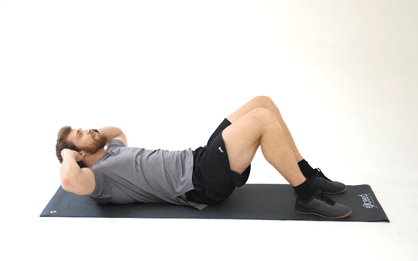

Abdominal exercises are a type of strength exercise that affect the abdominal muscles (colloquially known as the stomach muscles or "abs"). Human abdominal consist of four muscles which are your rectus abdomens, internal oblique, external oblique, and transversus abdominis.When performing abdominal exercises it is important to understand the effects, functions, the types of exercises, and think about how to perform this exercise safely.
Abdominal exercises are useful for building abdominal muscles. This is useful for improving performance with certain sports, back pain, and for withstanding abdominal impacts (e.g., taking punches).
Abdominal muscles have many important functions, including breathing, coughing, and sneezing, and maintaining posture and speech in a number of species.Other abdominal functions are that it helps "in the function of support, containment of viscera, and help in the process of expiration, defamation, urination, vomiting, and also at the time of childbirth."The anterior abdominal wall is made up of four muscles—the rectus abdominis muscle, the internal and external obliques, and the transversus abdominis."The two internal muscles, the internal oblique, and the transverse abdominis, respond more to increases in chemical or volume-related drive than the two external muscles, the rectus abdominis and external oblique; the basis for this differential sensitivity is unknown".
One of the most popular exercise is what is known as the abdominal crunch because it activates the four abdominal muscles because it flexes the spine while laying down with their feet on the ground while raising their upper body up and then back down.
Another effective exercise is an abdominal plank because it is used when strengthening their trunk and their inner and outer oblique of their core.